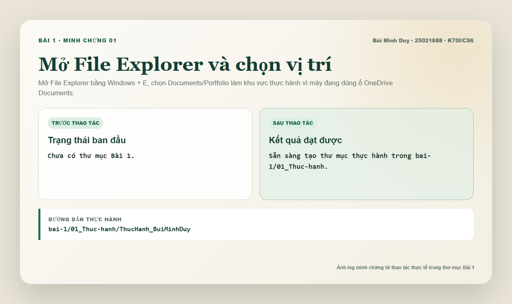
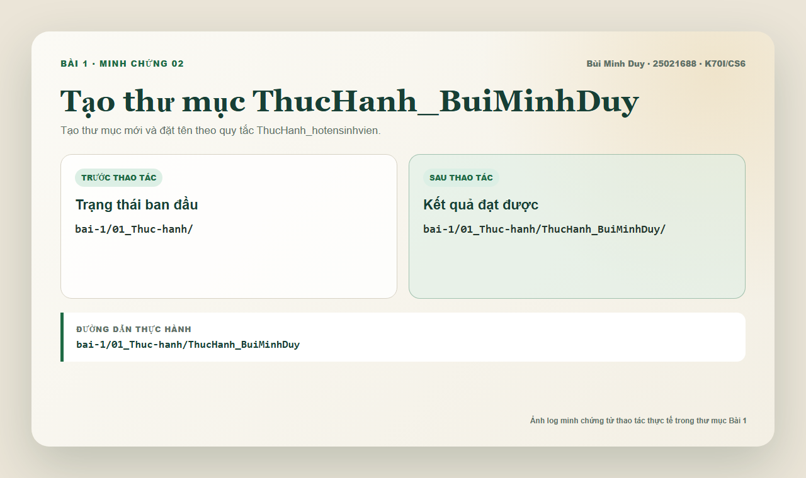
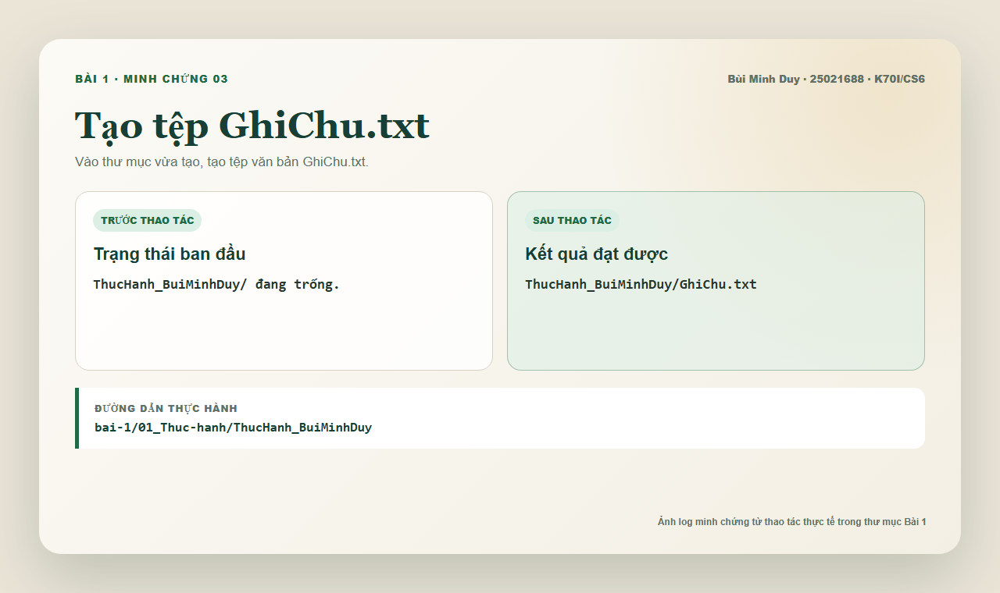
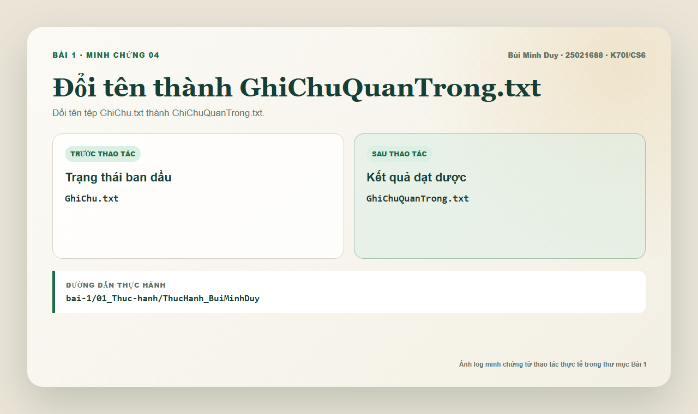
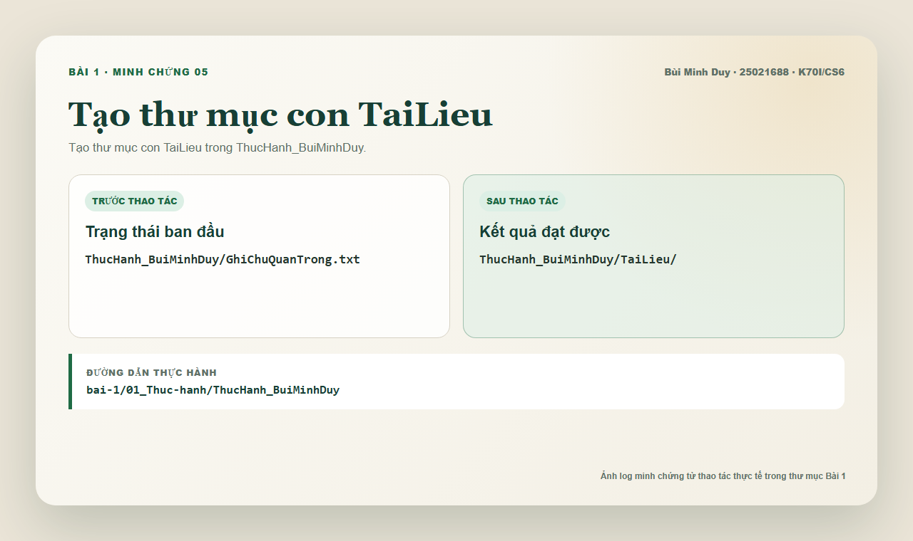
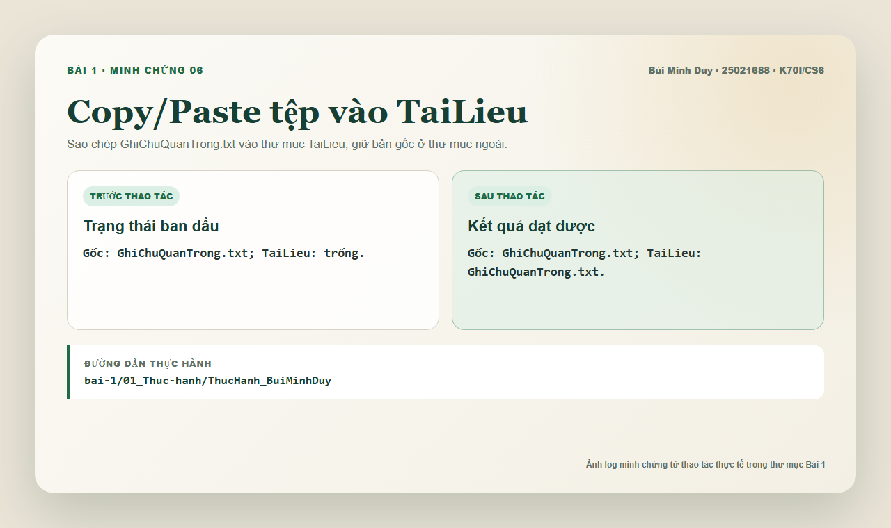
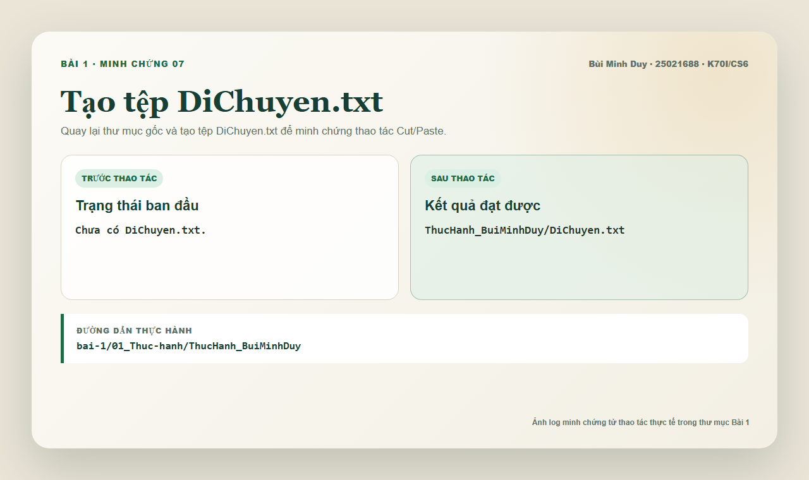
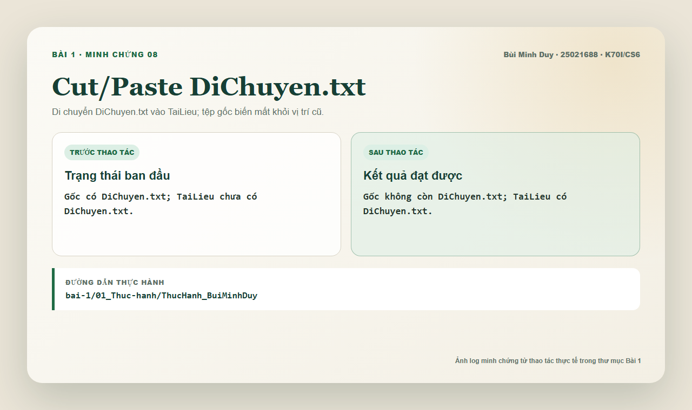
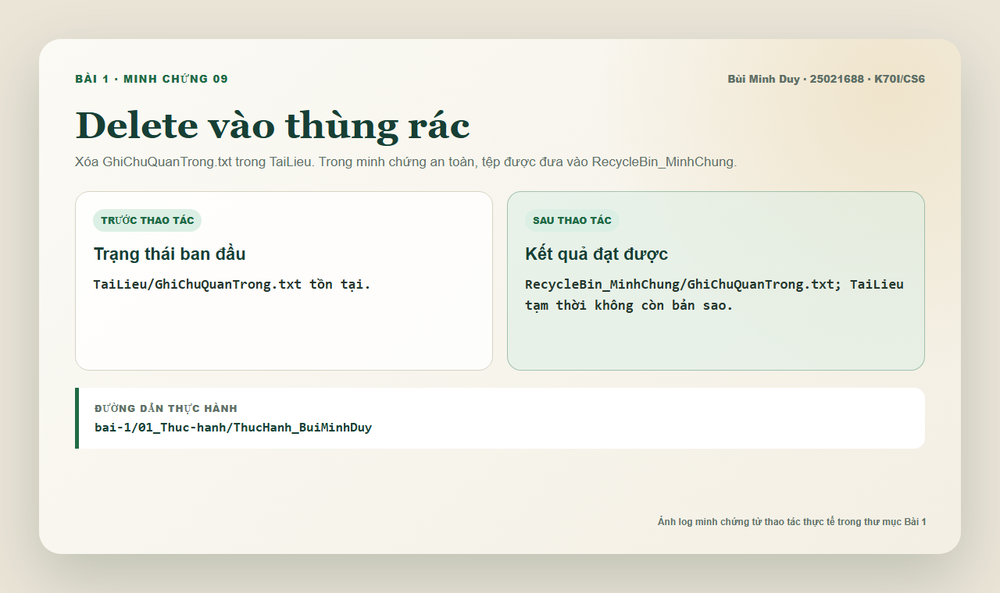
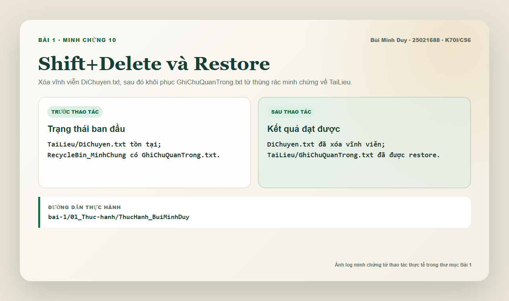

Thư mục đúng tên
Tạo `ThucHanh_BuiMinhDuy` trong khu vực thực hành của Portfolio.
Bài tập 1 · Portfolio cá nhân
Thực hành tạo, đổi tên, sao chép, di chuyển, xóa và khôi phục tệp/thư mục trong Windows. Bài làm có thư mục thực hành thật, nhật ký thao tác, tệp văn bản nộp bài và 10 ảnh minh chứng rõ từng bước.
01 / Tổng quan
Bài thực hành có đủ thao tác với thư mục, tệp tin, copy/paste, cut/paste, delete, xóa vĩnh viễn và restore.
Tạo `ThucHanh_BuiMinhDuy` trong khu vực thực hành của Portfolio.
Tạo `GhiChu.txt`, đổi tên thành `GhiChuQuanTrong.txt` và tạo `DiChuyen.txt`.
Phân biệt rõ copy/paste, cut/paste, delete vào thùng rác minh chứng và xóa vĩnh viễn.
Ảnh log trực quan từng bước, kèm báo cáo TXT/PDF/DOCX và nhật ký thao tác.
02 / Quy trình
`bai-1/01_Thuc-hanh/ThucHanh_BuiMinhDuy`
03 / Minh chứng
Ảnh minh chứng là log trực quan từ thao tác thực tế trong thư mục Bài 1, không phải ảnh giả giao diện File Explorer.










05 / Ghi chú
Bài làm có thư mục thực hành thật trong `bai-1/01_Thuc-hanh`. Các thao tác xóa chỉ diễn ra trong phạm vi Bài 1 để không ảnh hưởng dữ liệu cá nhân khác.
Vì không can thiệp Recycle Bin hệ thống trong môi trường tự động, bước Delete/Restore được minh họa bằng `RecycleBin_MinhChung`. Khi thực hiện thủ công bằng File Explorer, thao tác tương ứng là Delete vào Recycle Bin và Restore từ Recycle Bin.